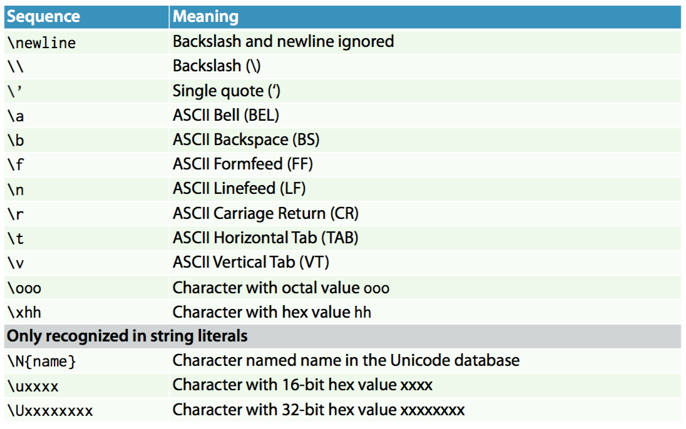

문자열 심화
이번 시간에는 문자열에 대해서 배워볼꺼야.
문자열은 "(큰 따음표) 나 '(작은 따음표) 로 묶어서 표현 할 수 있다고 했었지? 그리고 값이나 변수를 문자열 타입으로 바꾸려면 str 함수를 이용하면 됐었어.
더 나아가서 str ( 문자열 ) 타입으로 무엇을 할 수 있는지 알아보자.
참고로 이번 시간에 문자열에 대한 함수들이 소개될텐데 그게 그 함수가 바로 호출되는게 아니고 . 연산자를 써서 호출되는 코드가 많은데, 이건 아직 클래스와 객체개념을 모르기 때문에 이해가 안될 수도 있어.
그냥 문자열을 이용해서 이런게 가능하다 라는 느낌으로 가면 될 것 같아.
이스케이프 문자
파이썬에서 문자열은 큰 따음표나 작은 따음표로 묶어서 쓴다고 했었지? 그런데 문자열 안에 큰 따음표로 묶여있는 상황에서 큰 따음표를 또 쓰고 싶은 상황에 어떻게 해야 할까?
예를 들어서 그의 이름은 "철수" 입니다. 라는 문장이 있다고 하자.
# example 1. 이스케이프문자
a = "그의 이름은 "철수" 입니다."
print(a)
위 코드가 제대로 동작할까? 에러가 날거야. 파이썬은 "그의 이름은 ", " 입니다." 를 각각 문장으로 해석하게 되거든.
이런 상황에 이스케이프 문자를 활용하면 해결 할 수 있어.
# example 1-1. 이스케이프문자
a = "그의 이름은 \"철수\" 입니다."
print(a)
'\'(역슬래시) 는 이스케이프 기호인데, 키보드에서 원화돈기호버튼를 눌러서 입력할 수 있어.
파이썬은 문자열에서 이스케이프 기호를 보게되면 문자가 아니라 이스케이프 로 해석을 하게돼.
한 마디로 \" 는 큰따음표 라는 문자를 의미하는 거지.
큰 따음표뿐만 아니라 이스케이프 문자로 표현할 수 있는 여러 문자가 있는데 아래 표와 같아.
출력해보면서 무슨 기능을 하는지 알아보자. a 문자를 출력한 다음에 이스케이플 출력하고 b 를 출력함으로 써 어떤 기능을 하는지 보여줄게.
# example 1-2. 이스케이프문자
from time import sleep
print("a\\b")
sleep(1)
print("a\'b")
sleep(1)
print("a\ab")
sleep(1)
print("a\bb")
sleep(1)
print("a\nb")
sleep(1)
print("a\tb")
sleep(1)
참고로 sleep 함수는 프로세스를 매개변수 시간만큼 멈추는 기능을 하는 함수야. 1초 하나씩 출력되도록 하기 위해서 사용했을 뿐이야.
경험상 많이 쓰는게 \n 인데 이건 문자열 중간에 "줄바꿈(엔터)" 를 묘사하기 위해서 사용되는 이스케이프야.
# example 1-3. 이스케이프문자, 줄바꿈.
# 이건 동작안함
print("a
b
c")
# 이건 동작함
print("a\nb\nc")
a 줄바꿈 b 줄바꿈 c 를 출력하기 위해서는 아래처럼 써야해. 위 처럼 쓴다면 편한 점도 있을텐데... 그런 점을 위해서 멀티라인 문자열이 있어.
멀티라인 문자열의 기호는 """, ''' ( 큰따음표 연속3개 혹은 작은따음표 연속3개 ) 인데, 아래처럼 활용가능해.
# example 1-4. 이스케이프문자, 멀티라인
print("""a
b
c""")
위 코드가 잘 동작하는 걸 볼 수 있어.
str(문자열) 에서 지원하는 여러 기능
슬라이싱
슬라이싱은 사실 문자열만이 가진 기능은 아니고, 배열같은 시퀀스 타입이 가지는 기능인데, 문자열이 문자들의 시퀀스잖아?
그래서 문자열에 특정 부분을 슬라이싱 하는 기능이 있어.
# example 2. 슬라이싱
a = "abcde"
print(a[0])
print(a[1])
print(a[2])
print(a[3])
print(a[4])
우선 시퀀스 타입은 [] 연산자를 이용해서 시퀀스에 있는 원소를 가져올 수 있었지? 예를 들어서 a[0] 이라고 하면 a 시퀀스의 1번째 원소를 의미하는 거야.
참고로 프로그래밍 언어는 0부터 세는 경우가 많이 때문에 제일 앞의 원소의 번호가 0번이 되는거야.
자 이번엔 이렇게 해볼까.
# example 2-1. 슬라이싱
a = "abcde"
print(a[0:1])
print(a[0:2])
print(a[0:3])
print(a[0:4])
print(a[0:5])
시퀀스 타입에 [x:y] 라고 하면 번호가 x 이상이면서 y 미만 인 시퀀스를 얻을 수 있어. 여기선 문자열이 곧 시퀀스니까 문자열의 특정부분을 자를 수 있다는 말이야.
# example 2-2. 슬라이싱
a = "abcde"
print(a[1:1])
print(a[1:2])
print(a[1:3])
print(a[1:4])
print(a[1:5])
위 코드로 슬라이싱 했을 때 어떤 문자열들이 출력될지 예상해보자.
format
다음으로 아주 편리한 format 함수를 알아보자.
저번에 구구단 출력을 해봤었는데 구구단 출력할 때 str() 로 바꿔주고 더해주고 하는 과정이 귀찮지 않았어?
포멧팅을 하면 더 간단해.
# example 3. 포멧팅
for i in range(1, 10):
print("{0} * {1} = {2}".format(2, i, 2*i))
위 코드를 실행해보면 구구단2단이 출력되는걸 볼 수 있는데.
format 이라는 함수는 문자열에 있는 {0}, {1}, {2} 같은 부분에 매개변수로 주어진 것들을 차례 차례 번호에 맞게 대응시켜서 문자열을 만들어 주는 함수야.
"{0} * {1} = {2}".format(2, i, 2*i) 를 보면 {0} 이 2 , {1} 이 i, {2} 가 2*i 에 대응되면서 문자열이 출력되는거지.
보면 알겠지만 2, i, 2*i 는 정수형 타입임에 주목하자. 굳이 문자열타입이 아니여도 format 할 때 알아서 바껴서 들어가는 거야. 그래서 format 에 매개변수로, 변수나 값이 들어갈 수 있어서 편하지.
그러면 "{0}, {2}, {1}".format(0, 1, 2) 의 결과로 어떤 문자열이 반환될까?
{0} 이 0 {2} 가 2 {1} 이 1 에 대응 되면서 "0, 2, 1" 이 되겠지? 이렇듯 중괄호 안에 있는 수에 대응되는 매개변수가 들어가면서 문자열이 만들어지는 거야.
사실 format 기능은 이 외에도 여러 베리에이션이 있는데 그건 다음에 알아보자.
그 외 기능들
help 함수는 매개변수로 넣은 값, 변수, 함수, 클래스에 대한 설명을 볼 수 있는데, help(str) 을 해서 str 로 무엇을 할 수 있는지 볼까?
굉장히 많은 함수들이 나올텐데, 그 중 편리한 몇가지를 알아보자.
# example 4. 여러 기능들
#1 join
a = "xyz"
print('#'.join(a))
#2 split
a = "axbxc"
print(a.split('x'))
#3 strip
a = " abcde "
print(a.strip())
print(a.rstrip())
print(a.lstrip())
먼저 join 함수는 매개변수로 시퀀스( 문자열, 배열 같은 ) 를 받고 그 시퀀스 사이 사이에 자기자신을 넣어서 새로운 문자열을 만들어 주는 함수야. 예를 들어 x.join(a) 라고 하면 a 시퀀스 원소들 사이사이에 x 가 들어가면서 새로운 문자열이 만들어 지는 거지.
두번째로 split 함수는 매개변수로 분리문자열 을 받게 되고, 주어진 문자열을 분리문자열로 분리하여 리스트를 만들어주는 함수야. 예를 들어 x.split(a) 라고 하면 x 문자열에서 a 부분을 기준으로 분리하여 리스트를 만들어 주는 거지.
구체적으로 예를 들어면 "a1b1c" 라는 문자열이 있었을 때 1로 분리를 하면 a, b, c 세개가 나오잖아? 이 a,b,c 로 리스트를 만들어주는거야.
세번째로 strip 인데 strip 은 문자열의 좌우끝에서 부터 strip 에 주어진 매개변수 문자를 전부 지워주는 함수야.
예를 들어서 "aaaaxxxaaaa" 라는 문자열이 있었는데 양쪽끝에서 a 를 전부지우면 xxx 가 되겠지?
그래서 "aaaaxxxaaaa".strip('a') == "xxx" 인 거야.
이 때 양쪽 끝말고 왼쪽에서만 혹은 오른쪽에서만 지우고 싶으면 lstrip, rstrip 을 쓰면 되는거지. 참고로 매개변수를 주지 않으면 공백에 대해서 strip 을 해줘.
그외 기능들(2)
# example 5. 여러 기능들2
#1 len
a = "abcde"
print(len(a))
#2 replace
a = "abcde"
print(a.replace('a', 'x'))
#3 count
a = "aabbccddee"
print(a.count('a'))
#4 find
a = "abcde"
print(a.find('c'))
len 함수는 매개변수로 주어진 시퀀스타입 ( 문자열이나 배열) 의 길이를 알려줘. 문자열의 경우 문자열의 길이가 되겠지?
replace 함수는 특정 문자를 다른 문자로 바꾸는 기능이 있어. 예를 들어 x.replace(a, b) 라고 하면 x 문자열에서 a 문자열을 b 문자열로 바꿔서 반환해주는 함수야.
count 함수는 매개변수로 주어진 문자열이 몇개가 포함되어 있는지 그 개수를 반환해주는 함수야.
find 함수는 매개변수로 주어진 문자열의 처음등장위치를 반환해주는 함수야.
조금 어지러울 수도 있어. 이러한 기능들이 도대체 무슨 쓸모가 있는 것일까? 사실 지금처럼 문자열이 짧을 때는 그 효과가 안느껴지지만,
문자열이 길거나 처리할 문자열들이 많아지면 그 때 쓸모가 있어지는 거야. 구글 검색엔진을 생각해보면, 사용자가 검색한 검색어와 유사한 내용을 가진 사이트들이 나오잖아?
그 내부의 알고리즘은 ( 해당 사이트와 검색어 사이의 유사도를 검사하는 알고리즘 ) 굉장히 복잡하겠지만, 사이트 내에 굉장히 많은 문자열들이 있을텐데 이런 문자열들을 다루려면 문자열 관련 함수들을 굉장히 많이 이용했을 거야.
그럼 바로 연습문제를 풀어보자.
연습문제
- 이스케이프 문자를 활용하여 a엔터엔터b 를 출력하기
- 이스케이프 문자를 활용하여 역슬래쉬 기호(\) 출력하기
- 멀티라인 문자열을 활용하여 a엔터엔터b 를 출력하기
- 슬라이싱 기능을 활용하여 "abcde" 에서 "bcd" 부분을 출력하기
- 사용자로 부터 수 x, y를 입력받아 x+y 를 출력하는데 이 때 x + y = x+y 입니다 의 꼴로 출력하기 ( format 기능 활용 )
- split 기능을 활용하여 "a b c d e" 를 공백을 분리자로 하여 배열 ["a", "b", "c", "d", "e"] 를 얻기
- 사용자로 부터 문자열 x 를 입력받아 주어진 문자열의 길이를 출력하기
- 사용자로 부터 문자열 x, y를 입력받아 x 문자열 안에 y 문자열의 개수를 출력하기
- 사용자로 부터 문자열 x, y를 입력받아 x 문자열 안에 y 문자열이 있다면 그 곳의 처음 위치를 출력하기 없으면 -1 을 출력
- 사용자로 부터 문자열 x, y, z 를 입력받아 x 문자열안에 y 문자열을 z 문자열로 바꾼 뒤 출력하기
- 사용자로 부터 문자열 x를 입력받아 x 의 맨 뒷글자 출력하기